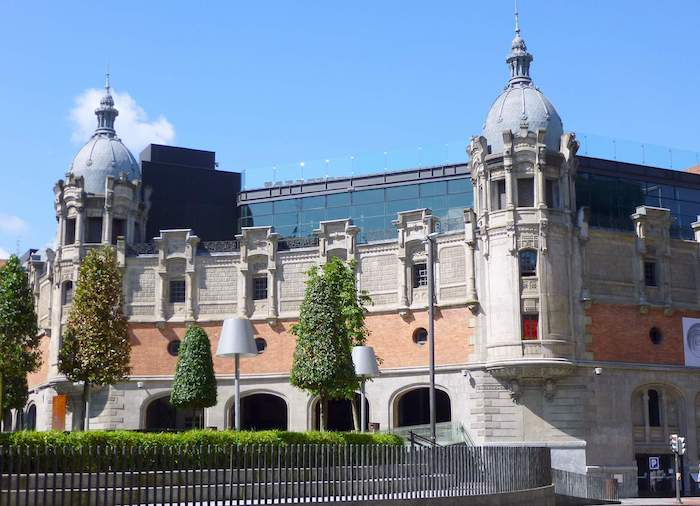

En parte del imaginario colectivo, Bilbao sigue siendo sinónimo de ciudad industrial. Sin embargo, los altos hornos y las grúas de construcción naval son hoy símbolos del pasado para la villa. Tras un proceso ejemplar de reconversión urbanística, nuevos símbolos arquitectónicos—como el Museo Guggenheim—muestran cómo Bilbao se ha convertido en una ciudad vanguardista centrada en la cultura, los negocios y el turismo.
Iconos de Bilbao
En Bilbao, hay muchas cosas que se pueden visitar. Entre los muchos lugares, recomendamos los siguientes lugares que componen el mínimo turístico de la ciudad.
Casco ViejoRuta Turística
.jpg)

.jpg)
El Casco Viejo (abreviado como ‘el Casco’) es el barrio antiguo de Bilbao. La Iglesia de San Antón con su puente—el puente actual no es el original que aparece en el escudo—fue el origen de Bilbao, al que se añadierón después las siete calles: Somera, Artekale, Tendería, Belostikale, Carnicería Vieja, Barrenkale, y Barrenkale Barrena. Este núcleo original, junto con la Plaza Nueva, la Plaza Unamuno y algunas calles circundantes, constituyen el Casco Viejo. Aquí, se puede echar una mirada e imaginar cómo era aquel primer Bilbao comercial del medioevo y la modernidad, y, a la vez, descubrir parte del ambiente bilbaíno, mientras compramos en alguna tienda, saboreamos unos pintxos en los cientos de bares o, simplemente, paseamos por sus calles.
Museo Guggenheim Bilbao Página Web
.jpg)
A día de hoy, el Museo Guggenheim Bilbao necesita pocas presentaciones. Este no es solo el edificio más emblemático de la villa, sino símbolo del llamado efecto Bilbao: el proceso de reconversión urbanística que llevó a Bilbao de ser una ciudad insdustrial en decadencia a una ciudad de servicio en auge. Diseñado por el arquitecto Frank O. Gehry no hace falta entrar en el museo para apreciar desde fuera las diversas curvas de sus características láminas de titanio de su fachada.
Se planee visitar este museo de arte contemporáneo o no, merece dar una vuelta al museo para apreciar la geometría de las formas de su fachada, así como las diversas esculturas que la rodean entre las que destacan el Puppy, del escultor Jeff Koons; y Maman, de la escultora Louise Bourgeois. Ya en el interior, podremos disfrutar de las diversas exposiciones temporales que ofrece el museo, así como de The Matter of Time, del escultor Richard Serra, que es una de las colecciones permanentes más importantes de este museo.
Metro BilbaoPágina Web
Aunque no haya necesidad de usar el metro durante nuestra visita, conviene visitar algunas de sus estaciones para apreciar el diseño del metro bilbaíno. A diferencia de metros más antiguos como el de Buenos Aires, París o Londres, el metro bilbaíno es relativamente reciente—solo existe desde 1995—y está diseñado en todos sus detalles por el arquitecto Norman Foster. La tardía construcción del metro hace que sus estaciones sean amplias y luminosas, contrastándolo con los metros de antigua construcción de otras ciudades.
.JPG)

En la parada de Moyua, si se entra a través de Ercilla/Elcano, se puede encontrar una firma del mismo Norman Foster. Además, si se tiene tiempo, conviene visitar también la parada de Sarriko al ser radicalmente distinta del resto de las paradas de metro de Bilbao.
Athletic Club BilbaoPágina Web

Ninguna presentación de Bilbao puede quedar completa sin mencionar a su icónico equipo de fútbol: el Athletic Club Bilbao. Junto el Real Madrid y el Barça, este icónico equipo, fundado en 1898, es uno de los tres históricos de la liga (masculina) que han jugado siempre en primera división. Además, a día de hoy, el Athletic es uno de los equipos con más Copas del Rey en su palmarés, solo detrás del Barça. Sin embargo, si hay algo que caracteriza al Athletic sobre otros equipos son su filosofía y su afición.
Conocida como la filosofía del Athletic, el Athletic Club Bilbao solo acepta jugadores que o bien sean de o bien que se hayan formado en los territorios vascos—entedido en el sentido amplio de Euskal Herria. La afición bilbaína se caracteriza por su particular devoción y fervor hacia su equipo que se puede apreciar en el comportamiento de los hinchas antes, durante y después de la celebración de cada partido. Esta devoción—casi religiosa—se manifiesta de un modo único en en el nombre popular del estadio de fútbol—el San Mamés—como La Catedral, una denominación que precede a la existencia misma de una catedral en Bilbao.

El Athletic femenino celebrando
la victoria en la liga 2006/07
Picture by Katxijasotzaile (Dominio Público)
Desde 2002, el Athletic Club cuenta con un equipo femenino. En su corta historia, este equipo ya ha sido cinco veces campeón de la liga femenina de fútbol.
Paseo de la RíaRuta (Google Earth)
Llena antes de industrias y raíles, la orilla de la ría de Bilbao es a día de hoy el testigo de la transformación de la Bilbao industrial en la Bilbao icónica contemporánea. De esta forma, dar un paseo a lo largo de la ría—desde la iglesia de San Antón hasta ‘la Catedral’—es la mejor forma de conocer el Bilbao actual y apreciar sus hitos arquitectónicos. Para facilitar el seguimiento de la ruta, damos a continuación su descripción y ofrecemos un enlace a Google Earth y un archivo en formato KML con la ruta.
Recomendamos comenzar en la iglesia de San Antón. Desde allí, caminar en dirección hacia el Mercado de la Ribera a lo largo de la orilla hasta llegar al Teatro Arriaga. Ahí, continuar por el Arenal—la ribera—hasta el Ayuntamiento. Después, continuar por la orilla, observando como la Isozaki Atea se agrandan hasta llegar al puente ZubiZuri [literalmente “Puente Blanco” en euskera]. Una vez en el puente, cruzarlo y continuar caminando por la otra ribera en la misma dirección, hasta cruzar por debajo el puente de La Salve y llegar al Museo Guggenheim.
Alrededor del museo, se puede disfrutar su fachada y sus grandes esculturas. Después, se puede continuar por el Paseo de la Memoria, hasta llegar al Bizkaia Aretora de la UPV/EHU. Desde ahí, caminar hacia la Plaza Euskadi, desde donde se podrá apreciar la Torre Iberdrola y el Museo de Bellas Artes de Bilbao. Tras esto, caminar hacia el Puente de Deusto, el cual es un puente basculante que puede abrirse para permitir el tráfico marítimo. De ahí, sin cruzar el puente, bajar al paseo por las escaleras y seguir caminando por la ribera. A la izquierda se verá el Palacio Euskalduna y finalmente se llegará a las dependencias de lo que eran los astilleros Euskalduna, presididos a día de hoy por la roja grúa Carola.
Para terminar el paseo, podemos acercarnos a observar la Gabarra, el barco con el que el Athletic desfila por la ría con sus éxitos. Finalmente, tras meternos en un “athletic mood”, podemos caminar hasta ‘La Catedral’, también conocido como el Estadio San Mamés.
Cultura y Ocio
en Bilbao
Como cualquier otra ciudad, Bilbao tiene una gran oferta de actividades culturales y de ocio. Lamentablemente, no podemos ser completamente exhaustivos, por lo que solo exponemos algunos de los museos, teatros, salas de espectáculos y zonas de alterne de Bilbao que pueden ser de interés.
Museos
Museo Guggenheim Bilbao
.jpg)
Picture by Naotake Murayama (CC BY 2.0)
Emblema de la Bilbao icónica, este museo es de paso obligado para cualquier persona que visita Bilbao. En el interior, se puede apreciar aspectos de su arquitectura que no se pueden observar desde el exterior, así cómo ver exposiciones de arte contemporáneo de primer nivel como la instalación escultórica permanente The Matter of Time, del escultor Richard Serra.
Más sobre el GuggenheimMuseo de Bellas Artes de Bilbao

Picture by MuseoBBAABilbao (CC BY-SA 3.0)
El Museo de Bellas Artes de Bilbao es uno de los museos de arte más importantes no solo del País Vasco, sino también de España. Su colección permanente cuenta con obras artísticas de todos los estilos y periodos a partir del siglo XIII, donde se destacan las obras tanto de la escuela española como de la vasca. De esta última, este museo se sitúa como institución de máxima referencia.
Más sobre el Museo de Bellas Artes
Museo Vasco
(Museo Etnográfico e Histórico Vasco)
_1.jpg)
Picture by Zarateman (CC0 1.0)
El Museo Vasco—o Euskal Museoa—es el museo arqueológico y etnográfico del País Vasco. Ubicado en el antiguo colegio jesuita, este museo permite conocer—a través de sus extensas colecciones—las culturas, tradiciones, modos de ser y quehaceres diarios de las gentes que han habitado la región vasca a lo largo de los siglos.
Más sobre el Museo Vasco
Itsasmuseum Bilbao
(Museo Marítimo de Bilbao)

Picture by Xabier (CC BY-SA 4.0)
El Itsasmuseum Bilbao es el museo marítimo de Bilbao. En lo que fue parte de los astilleros Euskalduna, este museo permite conocer la historia de la actividad marítima de la ría de Bilbao. Además, el museo cuenta con una colección de embarcaciones que se puedan observar en los diques secos del exterior del museo.
Más sobre el ItsasmuseumLa Casa del Euskera

Picture by Azkue Fundazioa (CC BY-SA 2.0)
La Casa del Euskera—Euskararen Etxea—ofrece, via su Centro de Interpretación del Euskera, una exposición que permite conocer las múltipes facetas de una de las lenguas más singulares del mundo: el Euskera. Así, esta exposición (con materiales en euskera, castellano, inglés y francés) es un excelente punto de partida para quienes quieran aprender más sobre la lengua vasca.
Más sobre la Casa del EuskeraMuseo del Athletic Club Bilbao

El Museo del Athletic Club permite conocer en más detalle al centenario equipo de fútbol de la villa bilbaína, donde ha sido parte central de la vida de sus gentes. De esta forma, se sea fan del fútbol o no, este museo es una excelente opción de conocer un elemento central de la historia bilbaína. Además, existe la posibilidad de visitar el campo de San Mamés tanto en grupo como indivualmente con una audioguía.
Más sobre el Museo del AthleticTeatros y Espacios Culturales
Azkuna Zentroa - Alhóndiga Bilbao
Picture by Zarateman (CC0 1.0)
El Azkuna Zentroa - Alhóndiga Bilbao alberga también exposiciones de alto interés cultural. Sin embargo, este antiguo almacén de vino recuperado es, hoy en día, un centro culturar integral de ocio y cultura en el que se ofrecen todo tipo de actividades culturales (conferencias, danza, teatro...) además de contar con biblioteca, gimnasio, restaurantes y cines.
Más sobre la AlhóndigaTeatro Arriaga
.jpg)
Picture by Pedro J Pacheco (CC BY-SA 3.0 ES)
El Teatro Arriaga es el teatro más antiguo de Bilbao, datando de 1890. En el, se puede asistir a representaciones de teatro, musicales, danza, conciertos, zarzuela... Su nombre es en honor al compositor bilbaíno Juan Crisóstomo de Arriaga, conocido como el “Mozart vasco”.
Más sobre el ArriagaTeatro Campos Elíseos

Picture by Zarateman (CC0 1.0)
El Teatro Campos Elíseos es otro de los teatros tradicionales de Bilbao. Construido en 1902, su fachada—diseñanda por el arquitecto Jean Batiste Darroquy—es un ejemplo de la arquitectura modernista en Euskadi. Además, desde su restauración en 2010, este teatro fue modernizado para adaptarse a las necesidades escenográfica de hoy en día.
Más sobre el Campos ElíseosPalacio Euskalduna
.JPG)
Picture by Ardfern (CC BY-SA 3.0)
Construido en 1999, en donde se encontraban los astilleros Euskalduna, el Palacio Euskalduna es un centro de convenciones y de espectáculos, siendo otros de los símbolos de la transformación de Bilbao de ciudad a industrial a ciudad de servicios. Actualmente, este edificio es la sede de la Orquesta Sinfónica de Bilbao.
Más sobre el EuskaldunaLa FuNdicIOn Aretoa

Fundado en 1986, la FuNdicIOn es un teatro de vangurdia donde puede disfrutar creaciones escénicas contemporáneas—de teatro y danza—tanto locales como estatales e internacionales. Además, este teatro aspira a ser un punto de conexión del público con las vangurdias teatrales y de danza, para lo que busca nuevas formas de interacción artista-público.
Más sobre la FuNdicIOnPabellón Nº 6

Pabellón Nº 6 es un proyecto teatral y teatro creado en 2011 por distintas personas del mundo del teatro y la danza. Actualmente, este teatro es uno de los referentes del teatro independiente vasco, contando con un laboratorio teatral, como espacio de creación y de encuentro; y una compañía joven, para el desarrollo de proyectos por jóvenes formados en artes escénicas.
Más sobre el Pabellón Nº 6Espacio Open

Picture by Josué Tonelli-Cueto
Creado en 2009, Espacio Open es un centro cultural situado en la antigua fábrica de galletas de Bilbao, en el barrio de Zorrotzaurre. En este espacio, se encuentran centros creación, como Fab Lab Bilbao; y se desarrollan diversos proyectos artísticos, algunos de ellos abierto al público general. Este centro fue una de las primeras iniciativas que contribuyó a la transformación de Zorrotzaurre en un barrio de las artes. Dentro de este espacio, además del mencionado Fab Lab Bilbao, destacan el Jardín Secreto y Vintage Bilbao.
Más sobre el Espacio Open
Zorrotzaurre Art Work in Progress
(ZAWP)

Creado en 2011, Zorrotzaurre Art Work in Progress (ZAWP) es un movimiento artístico situado en el barrio de Zorrotzaurre, jugando un papel importante en la transformación de este barrio en un barrio de las artes. Este movimiento cuenta tanto con espacios escénicos, como el hACERIA Aretoa, como con espacios de trabajo para artistas. Hasta 2011, hospedó al Pabellón Nº 6.
Más sobre el ZAWPZonas de Alterne y Poteo
Casco Viejo

Plaza Nueva en el Casco Viejo
Picture by Mike Mirano (CC BY 2.0)
A parte de ser el núcleo histórico de la ciudad, el Casco Viejo es también una de las zonas de alterne de la ciudad con sus diversos bares—y sus pintxos—y el ambiente que se crea con la gente. Ya sea de día o de noche, el Casco Viejo es un lugar ideal para potear: vagar de bar en bar probando pintxos y tomando zuritos. De todas las zonas para esto, nuestras recomendaciones son la Somera, la Plaza Nueva y la Plaza Unamuno.
Además, en el Mercado de la Ribera, podemos disfrutar tanto de una amable atmósfera como de los productos de alta calidad que se ofrecen en el.
Pozas
La calle Licenciado Pozas o Pozas, como es llamada por les locales, es una larga calle de bares que va desde el edificio de la Diputación Foral de Bizkaia hasta ‘la Catedral’, como se le llama a veces al estadio San Mamés. Cualquiera de los días, podemos hacer una ruta de pintxos poteando los bares de esta calle. Sin embargo, esta calle tiene su máxima afluencia en los entornos de los partidos del Athletic, que es cuando se puede experimentar la pasión y fervor bilbaínos por su equipo centenario.
Gastronomía
en Bilbao
La gastronomía es uno de los principales atractivos de Bilbao. La villa es actualmente uno los mejores destinos gastronómicos de nuestro país, con una oferta variada, económica y de categoría. Es más, Bilbao es la sede de varios de los mejores restaurantes del mundo, ya que, a 2022, contaba con seis restaurantes premiados con estrella Michelin. Sin embargo, no hace falta ir a uno de estos restaurantes premiados para disfrutar de una gran experiencia gastronómica en la villa, ofreciendo los restaurantes más económicos una excelente relación calidad-precio.
A día de hoy, Bilbao—y el País Vasco—es conocida por sus pintxos, que son elaborados aperitivos propios de nuestra región. Anualmente, los bares bilbaínos compiten por preparar el mejor pintxo, y la villa cuenta con numerosas rutas gastronómicas que permiten recorrer la ciudad degustando los pintxos más icónicos y mejor valorados.

{kind=link}
{kind=link}
{kind=link}
.jpg){kind=link}
{kind=link}
{kind=link}
Una Breve Historia
de Bilbao
Con sus más de 700 años, es difícil resumir la historia bilbaína en unos pocos párrafos. El objetivo de esta breve historia no es dar una historia detallada, sino transmitir el desarrollo de esta villa y su modo de ser en un texto breve que transmita como Bilbao pasó de ser un núcleo comercial del reino de Castilla a la ciudad icónica de hoy en día pasando por su definitorio periodo industrial.
Bilbao como Núcleo Comercial (siglos XIV-XVIII)
Bilbao fue fundada en 1300 por Don Diego López V de Haro, entonces señor de Vizcaya, mediante Carta Puebla, que fue firmada en 1301 por el rey Fernando IV de Castilla. A día de hoy, la plaza de Abando está presidida por este fundador quien sujeta en su mano la Carta Puebla que dió origen a la villa. Tras recuperar el Señorío de Vizcaya a la muerte de su tío López V de Haro quien se lo había arrebatado a la muerte del rey Sancho IV, María Díaz de Haro legitima fundación de Bilbao otorgando una nueva carta a la villa en 1310.
Esta nueva carta estableció nuevos privilegios a la villa, convirtiendo a Bilbao en puerto de obligado paso para el comercio del reino de Castilla con el mar. Esto hizo de Bilbao un importante núcleo comercial de Castilla y propició el desarrollo de la villa. Sin embargo, el carácter—y privilegio—comercial de Bilbao generaró tensiones con las anteiglesias y otras villas de Bizkaia que veían como su poder político y económico iba dismuyendo en favor de una incipiente Bilbao. En el siglo XVII, tras arrebatar Bilbao la capitalidad de Bizkaia a Bermeo, comenzaría un periodo de crisis y conflictos en Bizkaia que resultaría en varios alzamientos (las machinadas) a lo largo de los siglos XVII y XVIII. Sin embargo, a pesar de ello, Bilbao fue consolidando tanto su poder económico como político dentro de Bizkaia.
Una muestra del poderío comercial desarrollado por Bilbao en este periodo tanto a nivel nacional e internacional se puede apreciar en la palabra inglesa bilbo/bilboa surgida a finales del siglo XVI. Esta palabra, cuyo significado se refiere a una espada o a un tipo de barra usada para confinar los pies de prisioneros en barcos, muestra la importancia del comercio objetos derivados del hierro en Bilbao—un hecho que será fundamental en el nacimiento de la Bilbao industrial.
La Bilbao liberal frente al Carlismo (siglo XIX)
El siglo XIX está marcado principalmente por el conflicto entre las formas más liberales—burguesas—de política que surgían y las formas más tradicionales, que desembocaron en las guerras civiles conocidad como las guerras carlistas. Durante este periodo, el caracter burgués de Bilbao se materializó en el hecho de que Bilbao se convirtió en un símbolo del liberalismo dentro de Bizkaia. Debido a esto en parte y su importancia económica, en la primera y tercera guerras carlistas, Bilbao fue un objetivo bélico importante de los carlistas. En ambas guerras, el bando carlista asediaría Bilbao no una ni dos, sino tres veces: dos en la primera guerra carlista y una en la tercera.
A pesar de los tres asedios carlistas (en 1835, en 1836 y en 1874), Bilbao resistió convirtiéndose así en un símbolo de la victoria del liberalismo sobre el tradicionalismo. Estos asedios forman también parte de la mitología bilbaína del bacalao, siendo la leyenda—muy probablemente falsa dado que las evidencias de la afición bizkaina al bacalao datan de finales del siglo XVIII—la siguiente:
Un comerciante (al que la leyenda identifica como Simón Gurtubay) pidió erróneamente una tonelada de bacalao al confundirse, en un pedido de bacalao, la ‘o’ disyuntiva de “100 o 120 bacaladas” por un cero. Inicialmente, este comerciante estuvo al borde un ataque de nervios, dado que la cantidad pedida de bacalao era imposible de vender sin que se echara a perder. Afortundamente para este, su desgracia sucedió a la vez que el asedio carlista. Así, cuando la comida empezó a escasear, este comerciante pudo vender su tonelada de bacalao a muy buen precio y el bacalao se convitió en un plato popular bilbaíno.
Edad de Oro: la Bilbao Industrial (1880-1930)
En la segunda mitad del siglo XIX, tras su revolución industrial, Reino Unido estaba en necesidad de un acero de mayor calidad. Motivado por este problema, el inventor británico Henry Bessemer inventó su nuevo sistema de producción de acero de alta calidad, pero este método requería hierro no fosfórico que estaba disponible sólo en dos lugares de Europa: Suecia y el norte de España, en particular los montes de Triano en las inmediaciones de Bilbao. Este hecho, unido a cambios políticos en Bizkaia que permitieron el comercio de hierro fuera de Bizkaia, propiciaron un incremento del comercio de hierro entre Bilbao y el Reino Unido.
Como consecuencia de este comercio, surgieron diversas industrias siderurgicas en Bilbao y sus alrededores: los Altos Hornos de Bilbao, creada en 1882 a partir de la modernización de la fábrica de Nuestra Señora de El Carmen (fundada en 1854 por los hermanos Ybarra); la Vizcaya, creada en 1882 por el grupo liderado por Pedro Pascual Gandarias; y la Iberia, creada en 1890 a partir de la empresa Goitia y Compañía (fundada por un grupo de guipuzcoanos). Todas estas empresas se fusionarían en 1902 en la que fue la mayor empresa española durante la mayoría del siglo XX: los Altos Hornos de Vizcaya, la que sería en cierto modo el símbolo de la Bilbao industrial.
Esta revolución industrial bilbaína forjó el Bilbao del imaginario colectivo. Bilbao multiplicó su población por ocho en la última decada del siglo XIX debido al influjo de inmigrantes. Será en esta época cuando Bilbao empezó a expandise y absorver las anteiglesias de sus alrededores, como sucedió durante el ensanche de Bilbao. Además, estos fuertes cambios demográficos bilbaínos fueron el caldo de cultivo perfecto para el desarrollo local de los movimientos políticos que jugarían un papel central en la política española del siglo XX: el nacionalismo vasco, los movimientos obreros y el socialismo, el republicanismo y el liberalismo monárquico. Muestra de esta efervescencia de ideas en Bilbao son figuras vincualadas a la villa como Miguel de Unamuno, el famoso escritor y filósofo bilbaíno; Sabino Arana, fundador del nacionalismo vasco y el Partido Nacionalista Vasco; Resurreción María de Azkue, fundador y primer presidente de Euskaltzaindia (Real Academia de la Lengua Vasca); e Indalecio Prieto, un político socialista que fue ministro durante la 2.ª República.
Finalmente, es en esta Bilbao industrial donde el Athletic Club Bilbao es fundado en 1898. Este club de fútbol, su estadio—conocido como La Catedral desde antes de que Bilbao tuviera una catedral—y su particular filosofía son a día de hoy una parte esencial de la vida bilbaína con más de 130 años de fervor, historia y tradición.
Bilbao durante la 2.ª República, la Guerra Civil y el Franquismo (1931-1975)
En la 2.ª República, Bilbao fue una ciudad llena de pluralismo político—nacionalistas, socialistas, comunistas, liberales...—que se prolongó hasta la Guerra Civil. Durante la Guerra Civil, Bilbao fue la sede del primer Gobierno Vasco liderado por el lehendakari José Antonio Aguirre. A pesar de su resistencia y su Cinturón de Hierro, Bilbao cayó ante el bando sublevado en 1937. Sin embargo, en su retirada, las tropas nacionalistas y republicanas, por orden del Gobierno Vasco, no destruyeron la industrias de Bilbao “para poder garantizar el sustento del pueblo vasco”. Este hecho garantizó el papel de Bilbao y sus altos hornos como núcleo industrial de España tras la guerra.
Durante el franquismo, Bilbao sufrió altas dosis de represión. Sin embargo, el franquismo continuó desarrollando la industria bilbaína, lo cual atrajo a la villa bilbaína inmigrantes de todo el estado. Las terribles condiciones de estes propiciaron, en 1947, la primera huelga en la España de la posguerra. A pesar de la respuesta implacable de las autoridades franquistas, esta huelga marca el comienzo de un proceso de activación y radicalización de los movimientos nacionalistas y obreros frente a la dictadura que desembocará en una serie de conflictos laborales y políticos—cada vez más violentos—desde los años 60 hasta el final del franquismo. Así, al terminar el franquismo, Bilbao se encuentra llena de grandes esperanzas sociales y políticas, pero en un clima altamente violento marcado por la continuada actividad de ETA y otros grupos terroristas más allá del fin de la dictadura.
Crisis y Reconversión Industrial (1976-1996)
Tras la llegada de la democracia, el País Vasco se articula en Comunidad Autónoma a través del Estatuto de Autonomía de Guernica en 1979. Sin embargo, las pretensiones de Bilbao a la capitalidad vasca fracasan cuando es Vitoria la elegida como capital. Si esto no fuera poco, la industria siderúrgica bilbaína entra en una grave crisis en los años ochenta. Uno de los mayores símbolos de esta crisis es el cierre de los astilleros Euskalduna en 1988, después de que sus trabajadores se opusieran al cierre durante años mediante manifestaciones y enfrentamientos a la policía. Marcada así esta crisis, por multitud de conflictos sociales y políticos, la decada de los ochenta marca el final de la Bilbao industrial y sus altos hornos en el llamado proceso de reconversión industrial.
Además, esta época está marcada por las terribles inundaciones de 1983 en las que la ría subío hasta cinco metros de altura. El impacto de estas inundaciones (que se llevaron consigo a una treintena de personas) se vio incrementado por el hecho de que estas sucedieron en pleno agosto, en plenas fiestas de Bilbao durante la Aste Nagusia. En una nota más positiva, fue en 1983 y en 1984, cuando el Athletic Club Bilbao consiguió ganar La Liga dos veces consecutivas, tras llevar desde 1956 sin ganar la competición.
Edad de Plata: la Bilbao Icónica (desde 1997)
En 1995, el cierre de los Altos Hornos de Vizcaya marca la muerte definitiva de la Bilbao industrial. Sin embargo, mientras sus industrias cerraban, Bilbao se preparaba para realizar una reconversión urbanística sin precedentes a nivel global. A comienzos de los noventa, se crea la asociación Bilbao Metrópoli-30, para transicionar Bilbao y sus alrededores desde un ámbito industrial a un ámbito de cultura y servicios; y la sociedad Bilbao Ría 2000, para regenerar los espacios industriales no utilizados de Bilbao.
Este proceso de regeneración tiene su primera culminación con la innauguración de la red inicial de Metro Bilbao, en 1995; y el Museo Guggenheim Bilbao, en 1997. A estos le siguen diversos iconos del nuevo Bilbao que conformaran la Bilbao icónica de hoy en día: la Isozaki Atea, el ZubiZuri, la Torre Iberdrola, el paseo de la ría, la restauración de la Alhóndiga como centro cultural y de ocio... Sin embargo, este llamado Efecto Bilbao, que tantas otras ciudades en el mundo han tratado de imitar, no puede reducirse simplemente a los iconos arquitectónicos de la villa, sino a un profundo proceso de restructuración económica y estructural de Bilbao y sus alrededores durante los años noventa.